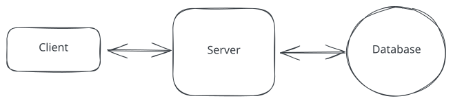
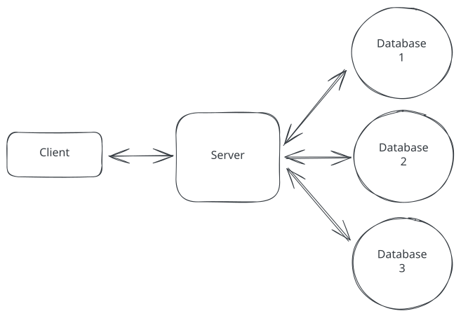
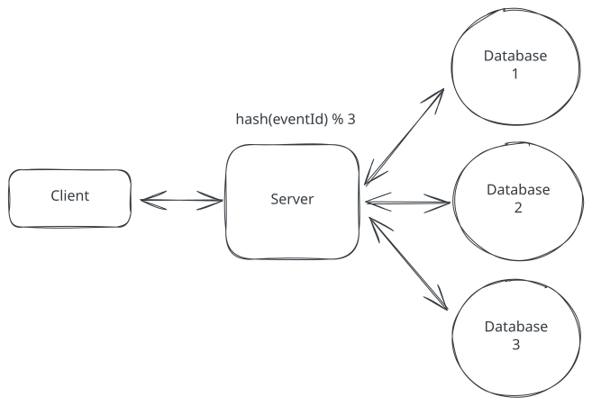
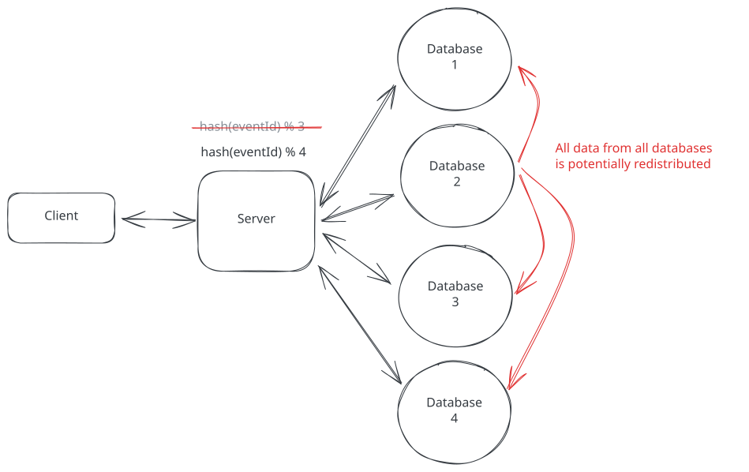
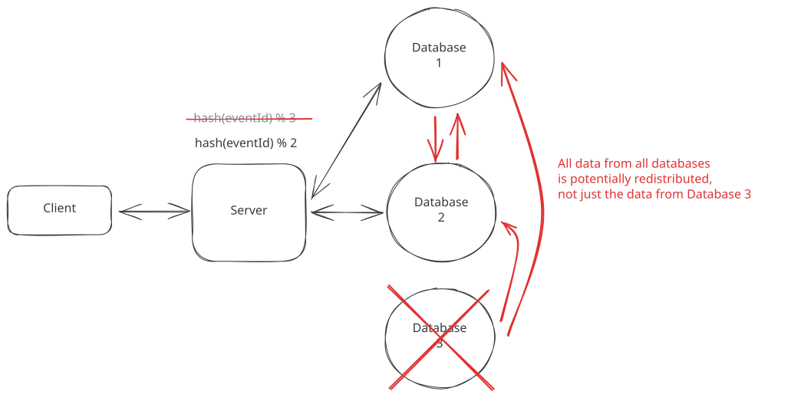
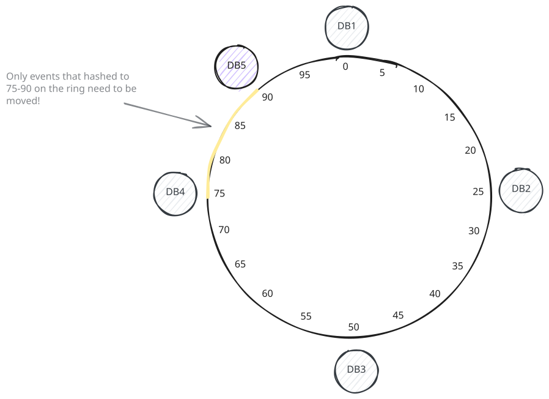
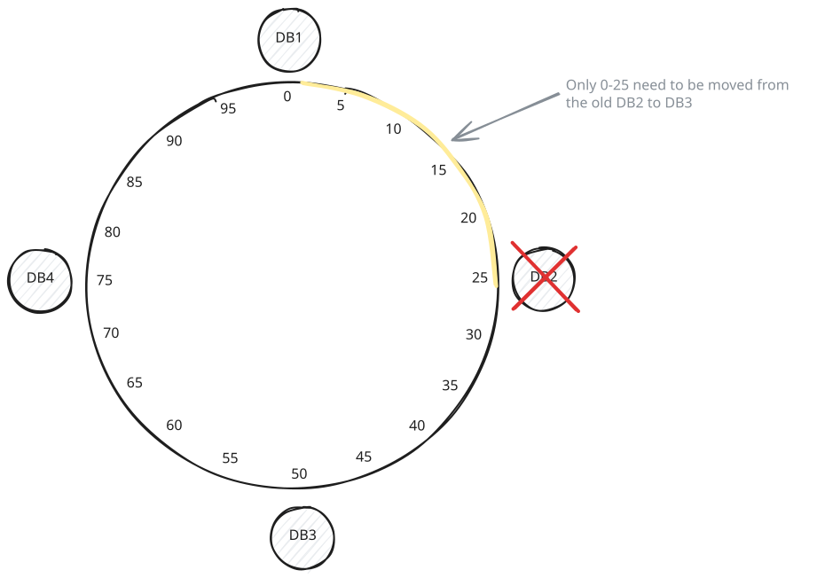
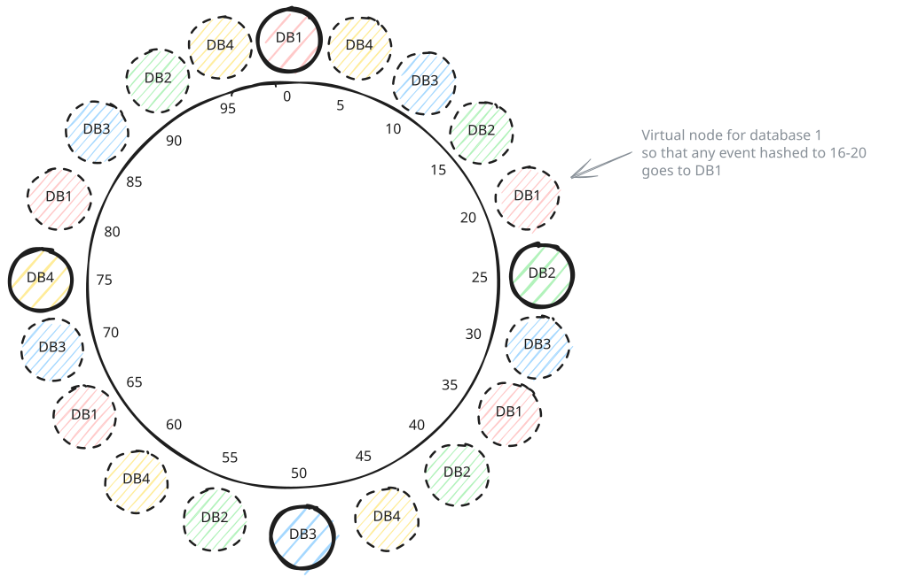

Core Concepts
Consistent Hashing
What problem does consistent hashing solve, how does it work, and how can you use it in an interview.
While preparing for system design interviews I'm sure you've come across consistent hashing. It's a foundational algorithm in distributed systems that is used to distribute data across a cluster of servers.
There are quite literally thousands of resources online that explain it, yet somehow I find the majority are overly academic.
In this deep dive, we'll give a hyper focused overview of consistent hashing, including the problem it solves, how it works, and how you can use it in your interviews.
Consistent Hashing via an Example
Let's build up our intuition via a motivating example.
Imagine you're designing a ticketing system like TicketMaster. Initially, your system is simple:
- One database storing all event data
- Clients making requests to fetch event information
- Everything works smoothly at first

Client Server Database
But success brings challenges. As your platform grows popular and hosts more events, a single database can no longer handle the load. You need to distribute your data across multiple databases – a process called sharding.

Sharding
The question we need to answer is: How do we know which events to store on which database instance?
First Attempt: Simple Modulo Hashing
The most straightforward approach to distribute data across multiple databases is modulo hashing.
- First, we take the event ID and run it through a hash function, which converts it into a number
- Then, we take that number and perform the modulo operation (%) with the number of databases
- The result tells us which database should store that event

Modulo Hashing
In code, it looks like this:
database_id = hash(event_id) % number_of_databasesFor a concrete example with 3 databases:
Event #1234 → hash(1234) % 3 = 1 → Database 1
Event #5678 → hash(5678) % 3 = 0 → Database 0
Event #9012 → hash(9012) % 3 = 2 → Database 2Great! This works well, until you run into a few problems.
The first problem comes when you want to add a fourth database instance. To do so, you naively think that all you need to do is run the modulo operation with 4 instead of 3.
database_id = hash(event_id) % 4You change the code, and push to production but then your database activity goes through the roof! Not just for the fourth database instance either, but for all of them.
What happened was the change in the hash function did not only impact data that should be stored on the new instance, but it changed which database instance almost every event was stored on.

Issue adding a Node
For example, event #1234 used to map to database 1, but now, hash(1234) % 4 = 0 so that data instead needs to be moved to database 0.
This means the data needs to be moved from database 1 to database 0. This isn't an isolated case - most of your data needs to be redistributed across all database instances, causing massive unnecessary data movement. This causes huge spikes in database load and means users are either unable to access data or they experience slow response times.
Let's look at another problem with simple modulo hashing.
Imagine a database went down. This could be due to anything from a hardware failure to a software bug. In any case, we need to remove it from the pool of databases and redistribute the data across the remaining instances until we can pull a new one online.
Our hash function now changes from database_id = hash(event_id) % 3 to database_id = hash(event_id) % 2 and we run into the exact same redistribution problem we had before.

Issue removing a Node
Clearly simple modulo hashing isn't cutting it. Enter, Consistent Hashing.
Consistent Hashing
Consistent hashing is a technique that solves the problem of data redistribution when adding or removing a instance in a distributed system. The key insight is to arrange both our data and our databases in a circular space, often called a "hash ring."
Here's how it works:
- We first create a hash ring with a fixed number of points. To keep it simple, let's say 100.
- We then place our database nodes on the hash ring. In the case where we have 4 databases, we could put them at points 0, 25, 50, and 75.
- In order to know which database an event should be stored on, we first hash the event ID like we did before, but instead of using modulo, we just find the hash value on the ring and then move clockwise until we find a database instance.
In reality, a hash ring usually has a hash space of 0 to 2^32 - 1 not 0-100, but the concept is the same.
How did this solve our problem? Let's look at what happens when we add or remove a database:
Adding a Database (Database 5)
Let's say we add a fifth database at position 90 on our ring. Now:
- Only events that hash to positions between 75 and 90 need to move
- These events were previously going to DB1 (at position 0)
- All other events stay exactly where they are!

Hash Ring with DB5 added
Whereas before almost all data needed to be redistributed, with consistent hashing, we're only moving about 60% of the events that were on DB1 (the 75-90 range, which is 15 out of DB1's 25-unit span), or roughly 15% of all our events.
Removing a Database
Similarly, if Database 2 (at position 25) fails:
- Only events that were mapped to Database 2 need to move
- These events will now map to Database 3 (at position 50)
- Everything else stays put

Hash Ring with DB2 removed
Virtual Nodes
We've made good progress, but there is still just one problem. In our example above where we removed database 2, we had to move all events that were stored on database 2 to database 3. Now database 3 has 2x the load of database 1 and database 4. We'd much prefer if we could spread the load more evenly so database 3 wasn't overloaded.
The solution is to use what are called "virtual nodes". Instead of putting each database at just one point on the ring, we put it at multiple points by hashing different variations of the database name.

Hash Ring with Virtual Nodes
For example, instead of just hashing "DB1" to get position 0, we hash "DB1-vn1", "DB1-vn2", "DB1-vn3", etc., which might give us positions 20, 35, 65 and so on. We do this for each database, which results in the virtual nodes being naturally intermixed around the ring.
Now when Database 2 fails:
- The events that were mapped to "DB2-vn1" will be redistributed to Database 1
- The events that were mapped to "DB2-vn2" will go to Database 3
- The events that were mapped to "DB2-vn3" will go to Database 4
- And so on...
This means the load from the failed database gets distributed much more evenly across all remaining databases instead of overwhelming just one neighbor. The more virtual nodes you use per database, the more evenly distributed the load becomes.
Virtual nodes also help when adding a new database. Without virtual nodes, a new node only takes load from its single clockwise neighbor. With virtual nodes, the new node's virtual positions are spread around the ring, so it absorbs a small chunk of data from multiple existing nodes. This gives you a much more balanced cluster from the start, rather than only relieving one overloaded neighbor.
Addressing Hot Spots
Even with virtual nodes distributing data evenly, hot spots can still occur. A hot spot is when one node gets a disproportionate amount of traffic because certain keys are far more popular than others. Think of a ticketing system where a Taylor Swift concert generates 100x the reads of any other event.
Consistent hashing doesn't solve this on its own since it distributes keys evenly, not traffic. Here are a few strategies that real systems use:
- Read replicas: Replicate popular keys across multiple nodes and load-balance reads among them. This is the most common approach.
- Key-space salting: Append a random suffix to hot keys (e.g., taylor-swift-{0..9}) so they hash to different nodes. Reads then scatter across those nodes and get aggregated.
- Adaptive rebalancing: Monitor traffic in real-time and move specific key ranges off overloaded nodes. This is operationally complex but some systems (like DynamoDB) do it automatically.
In an interview, the key distinction to make is: virtual nodes prevent structural imbalance (uneven key distribution), while replication and key salting prevent workload imbalance (uneven traffic).
Data Movement in Practice
Consistent hashing tells you where data should live, but it doesn't magically teleport terabytes of data when a node goes down. In practice, most distributed databases use replication alongside consistent hashing to handle failures without moving data at all.
For example, DynamoDB replicates each partition across three availability zones. When a primary node fails, a replica is promoted via a consensus algorithm like Raft, and no data needs to move. Cassandra works similarly, replicating data to N consecutive nodes on the ring so reads can be served from surviving replicas.
Data movement really only happens during planned membership changes like adding capacity or permanently replacing a node to restore the replication factor. Even then, consistent hashing ensures only a bounded fraction of keys need to be re-replicated, not the entire dataset.
Consistent Hashing in the Real World
While our example focused on scaling a database, note that consistent hashing applies to any scenarios where you need to distribute data across a cluster of servers. This cluster could be databases, sure, but they could also be caches, message brokers, or even just a set of application servers.
We see consistent hashing (or variations of it) used in many heavily relied on, scaled, systems. For example:
- Apache Cassandra: Uses consistent hashing to distribute data across the ring
- Amazon's DynamoDB: Uses consistent hashing under the hood for partition placement
- Content Delivery Networks (CDNs): Use consistent hashing to determine which edge server should cache specific content
Not every distributed system uses consistent hashing. Redis Cluster, for example, uses a fixed hash slot approach instead. It divides the key space into 16,384 slots using CRC16(key) mod 16384 and assigns ranges of slots to nodes. This is simpler to reason about, though it requires more coordination when rebalancing. The choice between consistent hashing and fixed hash slots is a real design trade-off you might discuss in an interview.
When to use Consistent Hashing in an Interview
Most modern distributed systems handle sharding and data distribution for you. When designing a system using DynamoDB, Cassandra, etc you typically just need to mention that these systems use consistent hashing (or a form of it) under the hood to handle scaling.
However, consistent hashing becomes a crucial topic in infrastructure-focused interviews where you're asked to design distributed systems from scratch. Here are the common scenarios:
- Design a distributed database
- Design a distributed cache
- Design a distributed message broker
In these deep infrastructure interviews, you should be prepared to explain several key concepts:
- Why consistent hashing beats simple modulo-based sharding for data distribution
- How virtual nodes improve load balancing across the cluster
- Strategies for handling node failures and additions
- How hot spots arise and techniques to mitigate them (replication, key salting)
- The relationship between consistent hashing and replication for fault tolerance
The key is recognizing when to go deep versus when to simply acknowledge that existing solutions handle this complexity for you. Most system design interviews fall into the latter category!
Conclusion
Consistent hashing is one of those algorithms that revolutionized distributed systems by solving a seemingly simple problem: how to distribute data across servers while minimizing redistribution when the number of servers changes.
While the implementation details can get complex, the core concept is beautifully simple - arrange everything in a circle and walk clockwise. This elegant solution is now built into many of the distributed systems we use daily, from DynamoDB to Cassandra.
One thing to keep in mind: the term "consistent hashing" gets used loosely in practice. As Martin Kleppmann points out in Designing Data-Intensive Applications, some systems that claim to use consistent hashing actually use variations like hash-based partitioning with fixed slot ranges. The core principle of minimizing data movement during rebalancing is what matters, even if the exact implementation differs from the textbook ring approach.
In your next system design interview, remember: you usually don't need to implement consistent hashing yourself. Just know when it's being used under the hood, and save the deep dive for those infrastructure-heavy questions where it really matters.
Test Your Knowledge
Answer the question below to find your gaps.
Question 1 of 15
What is the main problem that consistent hashing solves?
1
Slow database queries due to inefficient indexing
2
Minimizing data movement when nodes change
3
Improving data compression
4
Reducing memory usage